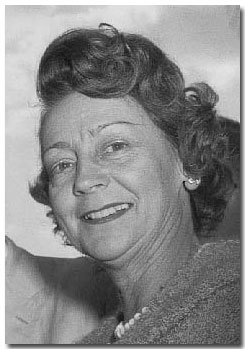
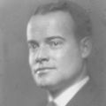
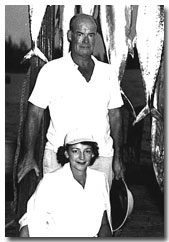
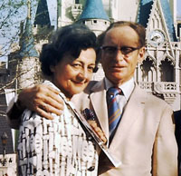
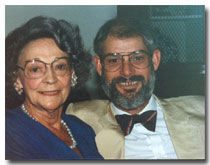
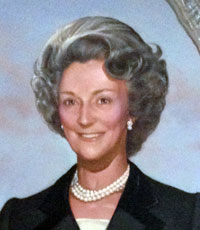

|
 |
|
Lucy E. HendersonLucia Maria Ernst (1910 - 1991) was a philanthropist and supporter of education in Florida. She was the wife of Alexander D. Henderson, a businessman and philanthropist who was one of the founders of the A. D. Henderson Foundation and Saint Andrew’s School in Boca Raton, Florida. |
|
| Important Facts | |
| September 12, 1910 | Lucia Maria Ernst was born in Brooklyn, New York. She was the daughter of Lucia Berth Doering and Joseph Ernst. |
 A. D. Henderson Jr. |
| Lucy worked for Avon Products as a secretary. | ||
| March 28, 1936 | She married Alexander Dawson Henderson Jr. in Manhattan, New York City, New York. | |
| March 9, 1946 | A. Douglas "Doug" Henderson was born in New York City. |

A. Douglas Henderson |
| 1946 | The family moved from New York City to Fort Lauderdale, Florida. | |
| April 23, 1949 | This is a photo of Alex and Lucy with their day’s catch at Riviera Beach in Florida. |
 Lucy and Alex |
| 1952 | Lucy Henderson moved to Hillsboro Beach with her husband and son and began her philanthropic activities. | |
| 1952 | Lucy Henderson helped found the Henderson Clinic in Fort Lauderdale, Florida. She continued to support the group with grants from the A. D. Henderson Foundation. | |
| 1959 | The A. D. Henderson Foundation was founded in 1959 by her husband, Alexander D. Henderson, and Lucy E. Henderson. The Foundation supports early childhood programs, family focused services, and systems change efforts working alongside community partners soour communities can be places where all children thrive. Source: A. D. Henderson Foundation website. | |
| 1961 | Alexander D. Henderson was one of the founders of Saint Andrew’s School in Boca Raton. Lucy was a trustee and continued to support the school for the rest of her life. |
Lucy E. Henderson |
| July 9, 1964 | Alexander D. Henderson died at Massachusetts General Hospital in Boston, Massachusetts. | |
| 1965 | After Mr. Henderson died in 1964, Mrs. Henderson continued her involvement in civic affairs and established the Alexander D. Henderson University School at Florida Atlantic University in her late husband’s name. | |
| September 30, 1965 | Lucy donated $750,000 to the Florida Atlantic University Endowment Corporation in memory of her late husband, Alexander D. Henderson. Source: Sun-Sentinel, 1965. | |
| 1965 and 1966 | Lucy was the Hillsboro Mile Community Chairman for the Heart Fund of Broward County. |
Lucy at FAU meeting |
| February 25, 1966 | Lucy was welcomed to the Board of Trustees of the Debbie-Rand Foundation, Inc., which sponsors the Boca Raton Community Hospital, and she continued to support the foundation and hospital for the rest of her life. | |
| Lucy helped found the Discover Center in Fort Lauderdale, Florida, and started the first dyslexia clinics in the Palm Beach County school system. | ||
| Lucy Henderson continued to support Saint Andrew’s with significant gifts for buildings, faculty housing, the Annual Fund, and endowment. Source: Saint Andrew’s 2001–2002 Endowment Fund Contributions. |
Alexander D. Henderson |
|
| Nov. 1966 | Lucy was appointed a trustee of FAU. | |
| June 3, 1967 | Granddaughter Lucia Angeline Henderson was born. | |
| December 1966 | The Board of Directors of the FAU Endowment Corporation met in the new administration building. Board Chair Thomas Fleming, Lucy Henderson Edmondson, and President Williams were present at this meeting. Source: Florida Atlantic University, The College History Series. | |
| December 1, 1968 | Lucy E. Henderson made a gift to the State and Florida Atlantic University to establish the Alexander D. Henderson University School in Boca Raton, Florida. The school was officially dedicated on this date, and Lucy received an honorary degree of Doctor of Humane Letters for her dedication to education. The school opened on 23 acres of campus land. The new building had 14 pie-shaped classrooms with soundproof walls and carpeted floors. Television cameras in each classroom allowed taping of both student and teacher “performances.” Source: Florida Atlantic University, The College History Series. |
 Lucy and Tex |
| Lucy wrote a speech on the back of an envelope which she apparently delivered in the spring or summer of 1968: “I stand before you tonight with mixed emotions - I was here at the beginning of this school in 1953 when Mr. Henderson started with six students, one of them was my son. Then the present buildings were erected on this site in 1956. Now we are moving on to the FAU campus this coming September. It is going to be very interesting for me to sit on the sidelines and watch its development. I believe Hillsboro Country Day School has done a great job but has reached the point where it cannot progress any further. On the FAU campus and as part of the university I believe it has great potential. I want to thank each and every one of you for being here tonight and sharing this moment with me. Bless you.” |
 Lucy & Doug - 1990 |
|
| 1968 | Lucy married Thomas E. “Tex” Edmondson in Las Vegas, Nevada. |
Lucia E. Henderson Crypt Forest Lawn Memorial Gardens Fort Lauderdale, Florida |
| Early 1970s |
She was a founder of Planned Parenthood of South Palm Beach and Broward Counties and remained a supporter and contributor for life. Planned Parenthood’s library in Boca Raton was named in her honor.
Mrs. Henderson Edmondson founded the Discovery Center and started the first dyslexia clinics in the public schools of Palm Beach County. |
|
| October 25, 1991 | Lucia Henderson Edmondson died of heart failure at Boca Raton Community Hospital in Florida. Her burial was conducted by the Kraeer Funeral Home in Boca Raton. She was interred in the same crypt as her husband, Alexander D. Henderson, at Forest Lawn Memorial Gardens Central in Fort Lauderdale, in Mausoleum Unit 1, Section No. 67, South. Source: Forest Lawn Memorial office. |
 Lucy Henderson (painting from Foundation office) |
| October 29, 1991 | Memorial services were held in the Saint Andrew’s School Chapel in Boca Raton, Florida. Source: October 27, 1991, The New York Times, p. 34; Florida Death Index. | |
| 1992 | The A.D. and Lucy Henderson Endowment Fund was established through a bequest from Lucy Henderson for general purposes in 1992. Her gift more than doubled the school’s endowment and was the largest donation ever received. Mrs. Henderson was a long-time supporter of Saint Andrew’s School. Source: Saint Andrew’s School website. |

Last update: August 12, 2026